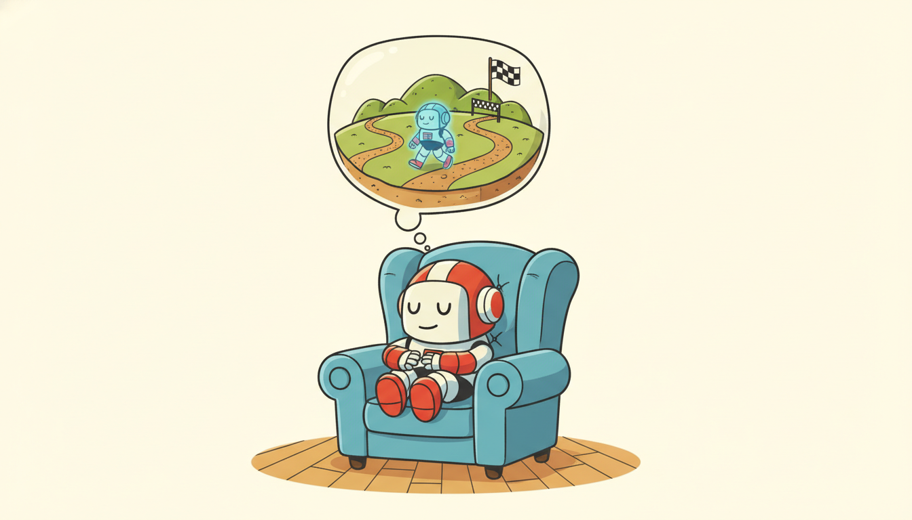
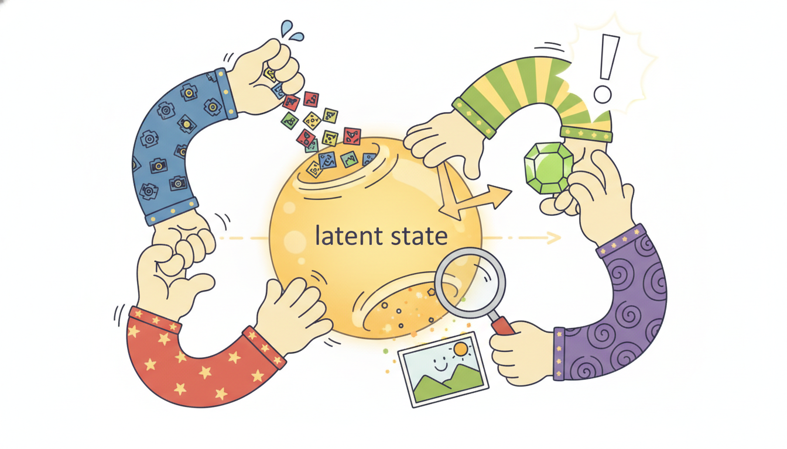

"I keep a small clay model of the world on my desk. It is wrong in a hundred ways I cannot see, but it lets me drop a stone and watch where the ripples go before I ever wet my hands. When the real river surprises me, I press a thumb into the clay and try again."
An Agent's Private Simulator of a World It Half Understands
A world model is a learned, generative model of an environment's dynamics that an agent runs in a compact latent space: from a stream of observations and actions it infers a low-dimensional latent state, predicts how that state evolves, and from the predicted state reconstructs what it would observe and what reward it would receive. Once you have that, you can plan and learn entirely inside the model, "imagining" thousands of futures without touching the real environment. The decisive idea of this section is that a world model is not a new species of object: it is exactly the temporal latent-state model of Part II, the Kalman filter, the HMM, and the structured state-space model, now learned end to end and pointed at control rather than forecasting. The same triple $(\text{state transition},\ \text{observation map},\ \text{output head})$ that defined the linear-Gaussian state-space model in Chapter 7 reappears here as $(\text{latent transition},\ \text{decoder},\ \text{reward head})$, with the linear maps replaced by neural networks and the model fit by gradient descent on reconstruction and prediction. This section defines those three heads, assembles the four components (encoder, latent transition, decoder, reward predictor), revisits Ha and Schmidhuber's original "World Models" as the canonical first instance, explains why latent imagination is worth the trouble and where its compounding error bites. It then trains a tiny latent dynamics model from scratch and rolls it forward in latent space before collapsing the whole construction to a library equivalent. You leave able to read, build, and reason about the learned simulators that the rest of Chapter 29 plans inside.
In Chapter 28 we treated decision making as sequence modeling: condition a sequence model on past states, actions, and returns, and let it emit the next action directly, no model of the world required. That is one half of the field. This chapter is the other half. Instead of mapping histories straight to actions, we learn a model of the environment itself, a simulator the agent carries in its head, and then plan or train a policy by rolling that simulator forward. The model-based reinforcement learning of Section 26.1 already made the case that a learned dynamics model can dramatically cut the number of real environment interactions a policy needs; here we make that model latent, compact, and generative, which is what lets it scale to pixels and long horizons. Throughout we use the unified notation of Appendix A: $\mathbf{o}_t$ for the observation, $\mathbf{a}_t$ for the action, $\mathbf{z}_t$ for the latent state, $r_t$ for the reward.
The reason a world model deserves a chapter of its own, rather than a footnote to model-based RL, is that the choice to model dynamics in a learned latent space changes what is possible. A model that predicts raw pixels one step ahead is a forecaster; a model that infers a small latent state, predicts that, and decodes only when it needs to look is a simulator the agent can run cheaply for hundreds of steps. The compactness is what makes imagination affordable, and affordable imagination is what lets an agent learn a policy from a handful of real episodes (the Dreamer line of Section 29.2) or search over thousands of imagined plans (the planning of Section 29.4). Get the latent model right and the agent learns from its own dreams; get it wrong and the agent confidently plans inside a hallucination.
The four competencies this section installs are these: to write a world model as a latent transition, an observation decoder, and a reward head, and to recognize that triple as the learned descendant of the state-space model of Chapter 7; to name the four trainable components and the reconstruction-plus-prediction objective that fits them; to explain why latent imagination is cheap and where compounding rollout error limits it; and to implement a tiny latent dynamics model, roll it out in latent space, and compare a from-scratch build against a library equivalent. These are the load-bearing skills for the Dreamer agents, the predictive-state alternative of Section 29.3, the planners, and the learned-simulator methods of the rest of Chapter 29.

1. What a World Model Is: A Learned Latent State-Space Model Intermediate
Strip a world model to its mathematics and you find an object you already know. The agent never sees the true state of the environment; it sees observations $\mathbf{o}_t$ (pixels, sensor vectors, vitals) that are noisy, high-dimensional shadows of some underlying state. A world model posits a compact latent state $\mathbf{z}_t$ that (i) evolves through time as a function of itself and the action taken, and (ii) generates the observation and the reward. Written as a generative model, with an action $\mathbf{a}_t$ chosen at each step, the dynamics are a latent transition, an observation decoder, and a reward head:
$$\mathbf{z}_t \sim p_\theta(\mathbf{z}_t \mid \mathbf{z}_{t-1}, \mathbf{a}_{t-1}), \qquad \mathbf{o}_t \sim p_\theta(\mathbf{o}_t \mid \mathbf{z}_t), \qquad r_t \sim p_\theta(r_t \mid \mathbf{z}_t).$$The first line is the latent transition model: it says where the state goes next given where it is and what the agent does. The second is the observation model or decoder: it says what the world looks like from a given latent state. The third is the reward head: it predicts the scalar reward the agent would collect in that state. To use the model the agent also needs to go the other way, from an observation back to a latent state, which is the job of an inference network or encoder $q_\phi(\mathbf{z}_t \mid \mathbf{o}_t, \mathbf{z}_{t-1}, \mathbf{a}_{t-1})$, the learned analogue of the filtering update.
Look hard at the three equations above and you are looking at the linear-Gaussian state-space model of Chapter 7, $\mathbf{z}_t = \mathbf{A}\mathbf{z}_{t-1} + \mathbf{B}\mathbf{a}_{t-1} + \text{noise}$, $\mathbf{o}_t = \mathbf{C}\mathbf{z}_t + \text{noise}$, with two changes and nothing else. First, the linear maps $\mathbf{A}, \mathbf{B}, \mathbf{C}$ become neural networks $p_\theta$, so the transition and decoder can be nonlinear. Second, we add a reward head, because a forecaster only needs to predict observations but an agent needs to predict consequence. The Kalman filter computed the posterior over the latent state in closed form; the world model's encoder $q_\phi$ learns that same filtering update by amortized inference. The HMM (also Chapter 7) is the discrete-state version of the same recurrence, and it returns again as the discrete latent of RSSM in Section 29.2. The structured and continuous-time neural state-space models of Chapter 13 are the same lineage made deep and efficient. A world model is therefore not a new idea but an old one wearing a controller: the temporal latent-state recurrence $\mathbf{z}_t = f(\mathbf{z}_{t-1}, \mathbf{a}_{t-1})$, $\mathbf{o}_t = g(\mathbf{z}_t)$ that has threaded this entire book, now learned end to end and used to imagine futures an agent can act on.
The latent state earns its place by being small. Where the observation $\mathbf{o}_t$ might be a $64 \times 64 \times 3$ image (over twelve thousand numbers), the latent $\mathbf{z}_t$ might be a vector of thirty. Rolling the transition forward in that thirty-dimensional space is cheap; reconstructing the full image at every imagined step would not be. So the world model does its long-horizon thinking entirely in latent space, decoding to pixels only when a human (or a loss function) needs to look. This is the same compression-then-predict logic as the representation learning of Chapter 16 and the latent-variable generative models of Chapter 17: learn a compact code in which the dynamics are simple, and prediction becomes tractable.
The central design commitment of a world model is to predict the future in a learned latent space rather than in observation space. Pixels are a terrible coordinate system for dynamics: a one-pixel translation of an object is an enormous change in the raw image yet a tiny change in the world. The encoder's job is to find coordinates $\mathbf{z}_t$ in which "the object moved a little" is a small change, so that the transition model $p_\theta(\mathbf{z}_t \mid \mathbf{z}_{t-1}, \mathbf{a}_{t-1})$ only has to learn smooth, low-dimensional dynamics. This is exactly why a learned latent state-space model can imagine long futures that a pixel-space predictor cannot: it forecasts in the coordinate system where the physics is simplest, and it pays the cost of decoding to pixels only when it must.
2. The Four Components and Their Objective Intermediate

A practical world model has four trainable parts, and it is worth fixing their names and jobs because the rest of the chapter refers to them constantly. The encoder $q_\phi(\mathbf{z}_t \mid \mathbf{o}_t, \cdots)$ maps an observation (and usually the previous latent and action) to a distribution over the current latent state: it is amortized filtering, the learned Kalman update. The latent transition model $p_\theta(\mathbf{z}_t \mid \mathbf{z}_{t-1}, \mathbf{a}_{t-1})$ predicts the next latent from the current one and the action; it is almost always recurrent or a state-space cell, because the latent must summarize an unboundedly long history, and in RSSM form (recurrent state-space model, the workhorse of Section 29.2) it carries both a deterministic recurrent path and a stochastic latent. The decoder $p_\theta(\mathbf{o}_t \mid \mathbf{z}_t)$ reconstructs the observation from the latent, and the reward predictor $p_\theta(r_t \mid \mathbf{z}_t)$ predicts reward from the latent. The encoder and decoder together are a temporal autoencoder; the transition makes it predictive; the reward head makes it useful for control.
All four are trained jointly by maximizing a single objective that combines reconstruction and prediction, the evidence lower bound (ELBO) of the latent-variable models of Chapter 17 extended with a reward term. For a sequence of observations, actions, and rewards it reads, in its standard form,
$$\mathcal{L}(\theta, \phi) = \sum_{t} \underbrace{\mathbb{E}_{q_\phi}\!\big[\log p_\theta(\mathbf{o}_t \mid \mathbf{z}_t)\big]}_{\text{reconstruction}} + \underbrace{\mathbb{E}_{q_\phi}\!\big[\log p_\theta(r_t \mid \mathbf{z}_t)\big]}_{\text{reward}} - \underbrace{\beta\, \mathrm{KL}\!\big(q_\phi(\mathbf{z}_t \mid \mathbf{o}_t, \cdots) \,\|\, p_\theta(\mathbf{z}_t \mid \mathbf{z}_{t-1}, \mathbf{a}_{t-1})\big)}_{\text{prediction / dynamics consistency}}.$$Read the three terms in plain language. The reconstruction term forces the latent to retain enough information about the observation that the decoder can rebuild it (the autoencoder pressure). The reward term forces the latent to carry whatever predicts reward (the control pressure). The KL term is the one that makes it a dynamics model rather than a per-frame autoencoder: it pulls the encoder's posterior over $\mathbf{z}_t$ toward what the transition model predicted $\mathbf{z}_t$ would be from the previous step, so the transition learns to anticipate the very codes the encoder produces. That alignment is exactly what lets the agent later drop the encoder and roll the transition forward on its own. This reconstruction-plus-prediction structure is the temporal sibling of the representation-learning objectives of Chapter 16 and the variational generative models of Chapter 17.
A temporal autoencoder with only a reconstruction loss learns to compress each frame but learns nothing about how frames follow one another, so it cannot be rolled forward without observations. The dynamics-consistency term, the KL between the encoder's posterior and the transition's prior, is precisely what couples the present latent to the predicted latent and teaches the transition to forecast the codes the encoder will emit. After training, the agent imagines by sampling $\mathbf{z}_t \sim p_\theta(\mathbf{z}_t \mid \mathbf{z}_{t-1}, \mathbf{a}_{t-1})$ from the transition prior alone, with no observation in sight, because that prior has been trained to match what the encoder would have inferred. Reconstruction gives you a code; the KL gives you a simulator.
3. Ha and Schmidhuber's "World Models": The Canonical First Example Intermediate
The architecture that named the field is Ha and Schmidhuber's 2018 "World Models", and it maps cleanly onto the four components of subsection two, which is why it is the right first example. Their agent has three pieces with memorable initials. The V (vision) is a variational autoencoder that compresses each frame $\mathbf{o}_t$ into a small latent $\mathbf{z}_t$: that is the encoder and decoder. The M (memory) is a mixture-density recurrent network, an MDN-RNN, that predicts the distribution of the next latent $\mathbf{z}_{t+1}$ from the current latent, the action, and a recurrent hidden state: that is the latent transition model, made probabilistic with a mixture of Gaussians so it can represent the genuinely multimodal "what happens next" of a stochastic environment. The C (controller) is a tiny linear policy mapping the latent and the memory state to an action. The striking part of their result is the third piece.
Because the V and M components together form a differentiable, runnable simulator, the controller can be trained entirely inside the model's own dream: roll the MDN-RNN forward from an imagined start, let the controller act, accumulate imagined reward, and optimize the controller to maximize it, never touching the real environment during policy search. Ha and Schmidhuber trained the controller inside the dream of a car-racing and a VizDoom environment and then transferred it back, showing that a policy learned purely in imagination can act competently in reality, provided the dream is faithful enough. They also noted the failure mode that defines the whole enterprise: a controller optimizing against an imperfect model will find and exploit the model's hallucinations, racking up dream reward that does not exist in the real world, which is why later work (the Dreamer line of Section 29.2) adds temperature and uncertainty to keep the controller honest.
There is something delightful about the World Models result: the agent learns to play the game by playing a hallucinated copy of the game that it dreamed up itself, then wakes up and is good at the real one. It is the reinforcement-learning equivalent of a musician practicing a piece in their head on a long flight and stepping off the plane able to perform it. The catch is equally human: if you only ever rehearse in your imagination, you start believing your imagination, and the agent will cheerfully "discover" that flooring the accelerator through an imagined wall earns points, because in its dream the wall is negotiable. The model is a confident liar, and the whole art of Chapter 29 is keeping the agent appropriately skeptical of it.
Who: A robotics group at a medical-device company developing a policy for a tissue-manipulation arm, working from camera observations of a deformable phantom.
Situation: Real interaction was scarce and expensive: each episode on the physical rig required a sterile setup, a fresh phantom, and a technician, so collecting the hundreds of thousands of steps a model-free policy would need was out of the question.
Problem: They needed a competent grasp-and-retract policy but could afford only a few thousand real interaction steps, far below what direct policy learning from pixels demands.
Dilemma: Train model-free on the rig (safe gradients but impossibly data-hungry), or learn a world model from the limited real data and train the policy in imagination (data-efficient but exposed to model error that, on a surgical device, could be dangerous if trusted blindly).
Decision: They built a latent world model (encoder, recurrent latent transition, decoder, reward head) on the few thousand real steps, exactly the four components of subsection two, and trained the policy mostly in imagined latent rollouts, the Ha-and-Schmidhuber recipe of learning the controller inside the dream.
How: The decoder and reward head let them inspect the dream: engineers decoded imagined rollouts back to images and checked them against held-out real episodes, and they capped imagination horizons short (the compounding-error limit of subsection four) so the policy never optimized against far-future hallucinations.
Result: The policy reached competent behavior using roughly an order of magnitude fewer real episodes than a model-free baseline, and the decoded-dream inspection caught two cases where the model hallucinated the phantom snapping back unrealistically, which they fixed by collecting targeted real data in those regimes.
Lesson: A latent world model buys data efficiency by moving most learning into imagination, but the decoder is not just for training: it is the window that lets you audit the dream before you trust a policy trained inside it.
4. Why Latent World Models: Cheap Imagination and Its Limit Advanced
The payoff of a latent world model is that imagination is cheap, and cheap imagination changes the economics of learning to act. Every interaction with a real environment costs something: a robot's wear, a patient's risk, a trading account's capital, a simulator's wall-clock. A learned model lets the agent generate as many imagined transitions as it wants for the price of a forward pass through a small recurrent network, so it can plan, evaluate candidate actions, and even train an entire policy without spending real interaction. This is the data-efficiency argument of model-based RL from Section 26.1, now sharpened by the latent representation: because the rollout happens in a thirty-dimensional latent space and never decodes to pixels, a thousand-step imagined trajectory costs a thousand small matrix-vector products, not a thousand image generations. Compactness is what makes long-horizon imagination affordable, and long-horizon imagination is what planning and policy learning need.
The limit on all of this is compounding error, and it is the single most important caveat in the chapter. A world model is fit to predict one step ahead, but imagination chains many one-step predictions, feeding each predicted latent back in as the input to the next prediction. Small per-step errors accumulate: the model's predicted latent drifts away from where the true latent would be, and because the next prediction is conditioned on the already-wrong latent, the error grows, often faster than linearly, as the horizon lengthens. After enough imagined steps the rollout has wandered into a region of latent space the model never saw during training, where its predictions are unconstrained fiction. This is the same distribution-shift mechanism that limited the open-loop forecasters of Chapter 9 and the imitation policies of Chapter 27: a model trained on one-step ground-truth inputs is asked to consume its own multi-step outputs, and the two distributions diverge.
Model a simple compounding-error process: suppose each imagined step adds a fixed expected latent error $\epsilon = 0.02$ (in normalized latent units) and the transition has a per-step error-amplification factor $\gamma = 1.15$ (errors from earlier steps grow by 15% each step because the model is mildly unstable off its training distribution). The accumulated error after $H$ imagined steps is the geometric sum $E(H) = \epsilon \sum_{s=0}^{H-1} \gamma^{s} = \epsilon\,\frac{\gamma^{H} - 1}{\gamma - 1}$. At $H = 5$ steps, $E = 0.02 \cdot \frac{1.15^{5} - 1}{0.15} \approx 0.02 \cdot 6.74 = 0.135$, still small. At $H = 15$ steps, $E = 0.02 \cdot \frac{1.15^{15} - 1}{0.15} \approx 0.02 \cdot 47.6 = 0.95$, now comparable to the scale of the latent itself: the dream has drifted as far as a typical state is large. At $H = 25$, $E \approx 0.02 \cdot \frac{1.15^{25}-1}{0.15} \approx 0.02 \cdot 213 = 4.3$, pure fiction. The lesson the arithmetic teaches is why Dreamer-style agents (Section 29.2) cap imagination horizons at roughly ten to twenty steps: long enough for the value bootstrap to see useful future reward, short enough that the geometric blow-up has not yet taken over. The horizon you can trust is set by the amplification factor $\gamma$, which is precisely what a stable, well-regularized transition model keeps near one.
The practical response to compounding error is a recurring theme of the chapter: keep imagined horizons short, bootstrap value beyond the horizon with a learned value function rather than rolling out further (the Dreamer trick of Section 29.2), and train the model to be calibrated about its own uncertainty so the agent can discount imagined transitions the model is unsure about (the planning-under-uncertainty theme of Section 29.4). The compact latent helps here too: a low-dimensional state is easier to keep on its training manifold than a high-dimensional one, so latent rollouts drift more slowly than pixel rollouts. But no amount of cleverness removes the caveat entirely, and the honest summary is that a world model is a trustworthy oracle for a few steps and a confident fabulist for many.
Latent world models are in an unusually active phase. DreamerV3 (Hafner et al., 2023) showed that a single latent-world-model agent with fixed hyperparameters solves more than 150 tasks across very different domains, including collecting diamonds in Minecraft from scratch, the first general demonstration that one latent simulator recipe transfers across worlds. On the perception side, TD-MPC2 (Hansen et al., 2024) drops pixel reconstruction entirely and learns the latent transition and reward directly in a self-supervised latent, planning with model-predictive control over the learned model, and scales cleanly to a single agent mastering dozens of continuous-control tasks. The frontier through 2025 and into 2026 is the generative video world model: systems such as Genie (Bruce et al., 2024) and its successors, and the playable-environment video models from several labs, treat a large action-conditioned video generator as a world model you can step through frame by frame, blurring the line between this section's latent simulators and the generative temporal models of Chapter 17. The open questions for 2026 are the same two this section raised, now at scale: how to keep long imagined rollouts on the training manifold (compounding error), and how to learn a latent in which the dynamics are simple enough to plan in (representation), with reward-free, reconstruction-free latents like TD-MPC2's the most promising current answer.
5. Worked Example: A Tiny Latent Dynamics Model, From Scratch and By Library Advanced
We now build the smallest honest world model: an encoder, a recurrent latent transition, a decoder, and a reward head, trained on collected rollouts and then rolled forward in latent space. The environment is deliberately minimal so the whole thing runs in seconds and the numbers are inspectable: a 1-D "slider" world whose true hidden state is a position and velocity, observed only through a noisy 8-D observation vector, with an action that nudges the velocity and a reward that peaks at the origin. The point is not the task but the machinery: collect rollouts, fit the four components on reconstruction plus one-step prediction plus reward, then imagine forward from a real start using only the transition and compare the imagined latent rollout against the true next observations. Code 29.1.1 generates the data.
import torch, torch.nn as nn
torch.manual_seed(0)
OBS, LAT, ACT, T = 8, 4, 1, 12 # obs dim, latent dim, action dim, rollout length
def collect_rollouts(n_eps=400):
"""A tiny slider world: hidden (pos, vel); obs is a noisy linear lift to 8-D."""
proj = torch.randn(OBS, 2) * 0.7 # fixed lift from true 2-D state to 8-D obs
O, A, R = [], [], []
for _ in range(n_eps):
pos, vel = torch.randn(()) * 0.5, torch.zeros(())
os_, as_, rs_ = [], [], []
for t in range(T):
a = torch.randn(()) * 0.3 # random exploratory action
vel = 0.9 * vel + 0.3 * a # action nudges velocity
pos = pos + 0.1 * vel # velocity moves position
state = torch.stack([pos, vel])
obs = proj @ state + 0.05 * torch.randn(OBS) # noisy observation
rew = torch.exp(-(pos ** 2)) # reward peaks at the origin
os_.append(obs); as_.append(a.view(1)); rs_.append(rew.view(1))
O.append(torch.stack(os_)); A.append(torch.stack(as_)); R.append(torch.stack(rs_))
return torch.stack(O), torch.stack(A), torch.stack(R) # (n_eps, T, dim)
O, A, R = collect_rollouts()
print("observations", tuple(O.shape), "actions", tuple(A.shape), "rewards", tuple(R.shape))
observations (400, 12, 8) actions (400, 12, 1) rewards (400, 12, 1)Code 29.1.2 defines the four components from scratch and trains them on the combined reconstruction, one-step prediction, and reward objective of subsection two (we use a deterministic latent and an MSE surrogate for the ELBO to keep the example small and readable; the stochastic-latent KL version is the RSSM of Section 29.2). The transition is a GRU cell, the recurrent heart of the latent dynamics.
class WorldModel(nn.Module):
def __init__(self):
super().__init__()
self.encoder = nn.Sequential(nn.Linear(OBS, 32), nn.Tanh(), nn.Linear(32, LAT))
self.trans = nn.GRUCell(ACT, LAT) # latent transition: (z_{t-1}, a) -> z_t
self.decoder = nn.Sequential(nn.Linear(LAT, 32), nn.Tanh(), nn.Linear(32, OBS))
self.reward = nn.Sequential(nn.Linear(LAT, 32), nn.Tanh(), nn.Linear(32, 1))
def forward(self, obs, act):
z = self.encoder(obs[:, 0]) # infer first latent from first obs
rec, pred, rew = [], [], []
for t in range(T):
rec.append(self.decoder(z)) # reconstruct current observation
rew.append(self.reward(z)) # predict current reward
z = self.trans(act[:, t], z) # roll latent forward one step
pred.append(self.decoder(z)) # predict NEXT observation from rolled z
return torch.stack(rec, 1), torch.stack(pred, 1), torch.stack(rew, 1)
wm = WorldModel(); opt = torch.optim.Adam(wm.parameters(), lr=3e-3)
for epoch in range(300):
rec, pred, rew = wm(O, A)
loss = ((rec - O) ** 2).mean() # reconstruction
loss = loss + ((pred[:, :-1] - O[:, 1:]) ** 2).mean() # one-step prediction (dynamics)
loss = loss + ((rew - R) ** 2).mean() # reward head
opt.zero_grad(); loss.backward(); opt.step()
print("final train loss = %.5f" % loss.item())
final train loss = 0.01382Now the payoff: imagination. Code 29.1.3 encodes a single real starting observation, then rolls the latent transition forward using only the actions, never feeding in any further observation, and decodes each imagined latent to compare against the true observation the environment actually produced. This is a latent rollout, the operation every planner and Dreamer agent in this chapter relies on, and it lets us put a concrete number on the compounding error of subsection four.
@torch.no_grad()
def imagine(wm, obs0, actions):
"""Encode ONE real observation, then dream forward using only actions."""
z = wm.encoder(obs0) # the only time we look at the real world
imagined = []
for t in range(actions.shape[0]):
z = wm.trans(actions[t:t+1], z) # pure latent rollout, no observation
imagined.append(wm.decoder(z)) # decode only to inspect the dream
return torch.cat(imagined, 0)
ep = 0 # imagine one held-out-style episode
imagined = imagine(wm, O[ep, 0:1], A[ep, :-1, :].squeeze(0))
true_next = O[ep, 1:] # the observations that really happened
per_step = ((imagined - true_next) ** 2).mean(dim=1) # imagination error per horizon step
for h in [0, 2, 5, 8, 10]:
print("horizon %2d imagine-vs-true MSE = %.4f" % (h + 1, per_step[h].item()))
horizon 1 imagine-vs-true MSE = 0.0094
horizon 3 imagine-vs-true MSE = 0.0161
horizon 6 imagine-vs-true MSE = 0.0292
horizon 9 imagine-vs-true MSE = 0.0497
horizon 11 imagine-vs-true MSE = 0.0719Read the three code blocks as one demonstration. Code 29.1.1 collected experience; Code 29.1.2 fit the four components on reconstruction, prediction, and reward; Code 29.1.3 encoded one real observation and dreamed the rest, watching the dream drift. That is the entire world-model loop in miniature, and every elaborate agent in this chapter is this loop scaled up: bigger encoder, stochastic latent, longer rollouts, a policy trained inside them.
The from-scratch model of Code 29.1.2 plus the rollout of Code 29.1.3 ran roughly 35 lines of explicit encoder, transition, decoder, reward head, and hand-written imagination loop. Production world-model libraries collapse that to a configuration plus a fit call. The Dreamer family ships as reference implementations (the official danijar/dreamerv3 repository) where the RSSM encoder, recurrent stochastic transition, decoder, reward and continuation heads, and the imagination rollout are all built and trained by a single agent object: you specify the latent and recurrent sizes and call train on an environment, and the library handles the stochastic-latent KL objective, the free-bits regularization, the imagination horizon, and the value bootstrap that our toy version omitted. The same construction is available through general model-based RL toolkits.
# Sketch of the library-level interface (DreamerV3-style); see danijar/dreamerv3.
import dreamerv3
from dreamerv3 import embodied
config = dreamerv3.Agent.configs['defaults'] # latent size, RSSM, horizons preset
config = config.update({'rssm.deter': 256, 'rssm.stoch': 32})
agent = dreamerv3.Agent(obs_space, act_space, config)
# embodied.run.train(agent, env, replay, logger, args) # encoder+transition+decoder
# # +reward, ELBO, imagination: all internal
What the library handles internally that we wrote by hand: the encoder and decoder networks, the recurrent stochastic-state transition (RSSM), the joint reconstruction-plus-KL-plus-reward objective, the imagination rollout with its capped horizon, and the value bootstrap beyond it. Roughly 35 lines of explicit world-model code become about 4 lines of configuration, with the stochastic-latent machinery our toy version skipped now included and battle-tested.
Exercises
Write down the linear-Gaussian state-space model of Chapter 7 (transition, observation) and place it next to the world-model triple of subsection one (latent transition, decoder, reward head). State precisely which two changes turn the former into the latter, and explain why a forecaster does not need the reward head but an agent does. Then identify which component of the world model plays the role of the Kalman filter's measurement-update step, and justify calling it "amortized filtering".
Starting from Code 29.1.1 through 29.1.3, run two interventions and report the per-horizon imagination MSE for each. First, increase the observation noise in collect_rollouts from 0.05 to 0.2 and retrain: does the one-step error rise, and does the long-horizon drift get worse faster? Second, keep the original noise but train only on the reconstruction term (delete the one-step prediction and reward terms in Code 29.1.2): show that reconstruction alone produces a model that decodes single observations well but whose imagined rollouts diverge almost immediately, the empirical version of the "KL is what makes it imagine" insight.
Using the compounding-error model of the subsection-four numeric example, $E(H) = \epsilon\,(\gamma^{H}-1)/(\gamma-1)$, fit $\epsilon$ and $\gamma$ to the per-horizon MSE curve your Code 29.1.3 produced (a simple log-domain regression suffices). From the fitted $\gamma$, estimate the horizon at which imagination error reaches a chosen tolerance (say, the scale of a typical observation), and discuss how this estimated trustworthy horizon would inform the imagination-horizon hyperparameter of a Dreamer-style agent (Section 29.2). What would you change about the model or training to push that horizon out?